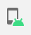
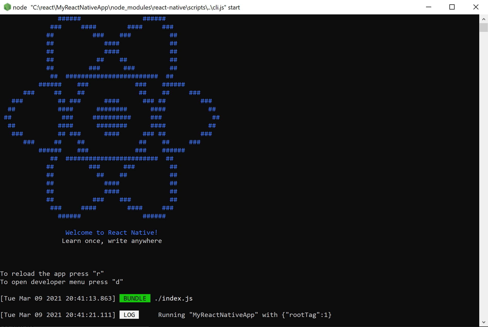
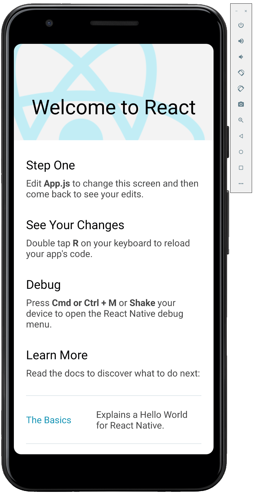
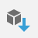
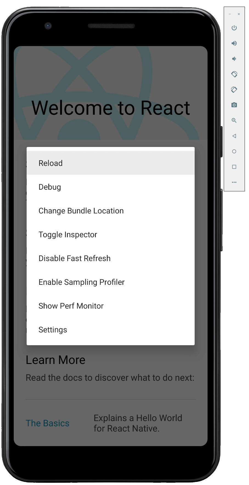

Get started developing for Android using React Native
This guide will help you to get started using React Native on Windows to create a cross-platform app that will work on Android devices.
Overview
React Native is an open-source mobile application framework created by Facebook. It is used to develop applications for Android, iOS, Web and UWP (Windows) providing native UI controls and full access to the native platform. Working with React Native requires an understanding of JavaScript fundamentals.
Get started with React Native by installing required tools
Install Visual Studio Code (or your code editor of choice).
Install Android Studio for Windows and set the ANDROID_HOME environment variable. Follow the instructions at Set Up Your Environment - React Native. Be sure to set the Development OS selection to "Windows" and the Target OS selection to Android.
Set the JAVA_HOME environment variable. The Gradle tool used to build Android apps requires a specific version requirement for the Java SDK. To find the supported version, in Android Studio, go to Settings->Build, Execution, Deployment->Build Tools->Gradle. Write down the path selected in the Gradle JDK drop-down. Set the JAVA_HOME environment variable to this path using the following steps:
- In the Windows search menu, enter: "Edit the system environment variables", this will open the System Properties window.
- Choose Environment Variables... and then choose New... under User variables.
- Set the Variable name to JAVA_HOME and the value to the path that you retrieved from Android Studio.
Install NodeJS for Windows You may want to consider using Node Version Manager (nvm) for Windows if you will be working with multiple projects and version of NodeJS. We recommend installing the latest LTS version for new projects.
Note
You may also want to consider installing and using the Windows Terminal for working with your preferred command-line interface (CLI), as well as, Git for version control. The Java JDK comes packaged with Android Studio v2.2+, but if you need to update your JDK separately from Android Studio, use the Windows x64 Installer.
Create a new project with React Native
Use npx, the package runner tool that is installed with npm to create a new React Native project. from the Windows Command Prompt, PowerShell, Windows Terminal, or the integrated terminal in VS Code (View > Integrated Terminal).
npx react-native init MyReactNativeAppIf you want to start a new project with a specific React Native version, you can use the
--versionargument. For information about versions of React Native, see Versions - React Native.npx react-native@X.XX.X init <projectName> --version X.XX.XOpen your new "MyReactNativeApp" directory:
cd MyReactNativeAppIf you want to run your project on a hardware Android device, connect the device to your computer with a USB cable.
If you want to run your project on an Android emulator, you shouldn't need to take any action as Android Studio installs with a default emulator installed. If you want to run your app on the emulator for a particular device. Click on the AVD Manager button in the toolbar.

.To run your project, enter the following command. This will open a new console window displaying Node Metro Bundler.
npx react-native run-android

Note
If you are using a new install of Android Studio and haven't yet done any other Android development, you may get errors at the command line when you run the app about accepting licenses for the Android SDK. Such as "Warning: License for package Android SDK Platform 29 not accepted." To resolve this, you can click the SDK Manager button in Android Studio

. Or, you can list and accept the licenses with the following command, making sure to use the path to the SDK location on your machine.C:\Users\[User Name]\AppData\Local\Android\Sdk\tools\bin\sdkmanager --licensesTo modify the app, open the
MyReactNativeAppproject directory in the IDE of your choice. We recommend VS Code or Android Studio.The project template created by
react-native inituses a main page namedApp.js. This page is pre-populated with a lot of useful links to information about React Native development. Add some text to the first Text element, like the "HELLO WORLD!" string shown below.<Text style={styles.sectionDescription}> Edit <Text style={styles.highlight}>App.js</Text> to change this screen and then come back to see your edits. HELLO WORLD! </Text>Reload the app to show the changes you made. There are several ways to do this.
- In the Metro Bundler console window, type "r".
- In the Android device emulator, double tap "r" on your keyboard.
- On a hardware android device, shake the device to bring up the React Native debug menu and select `Reload'.
